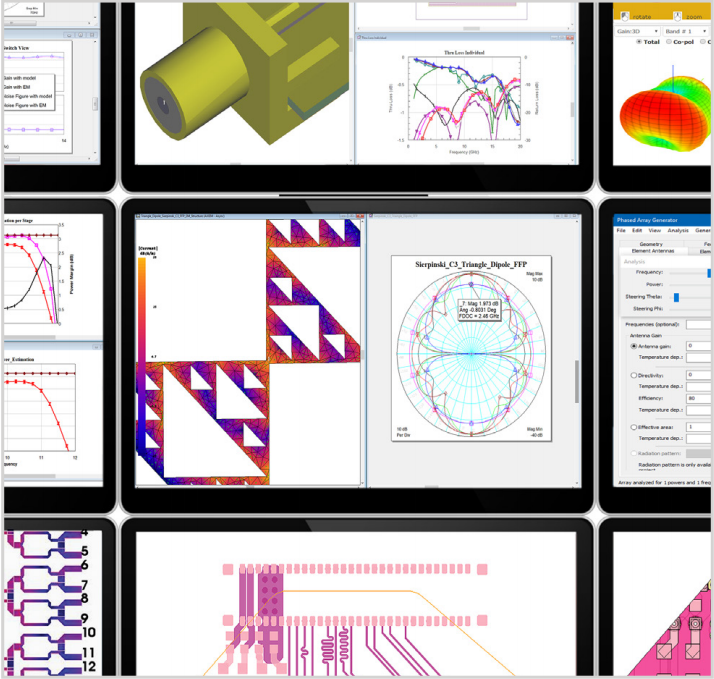
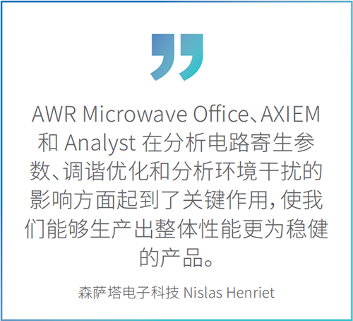
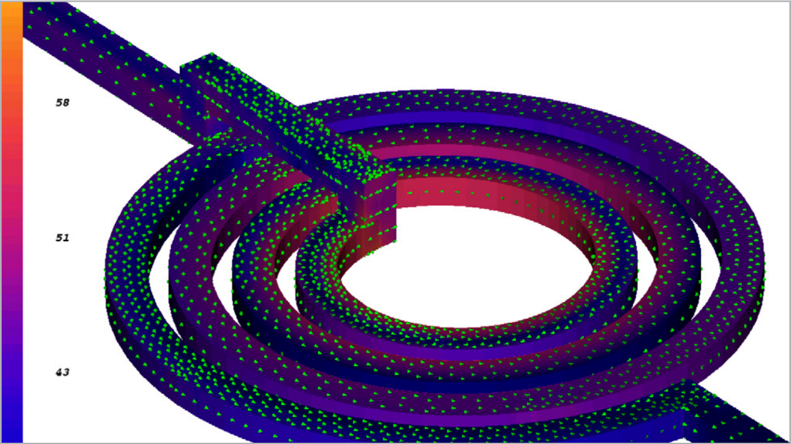
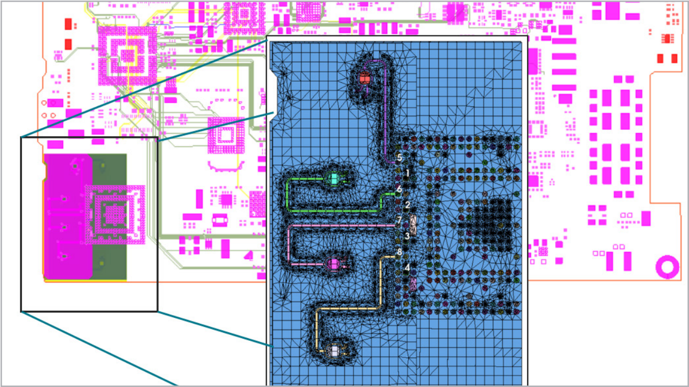
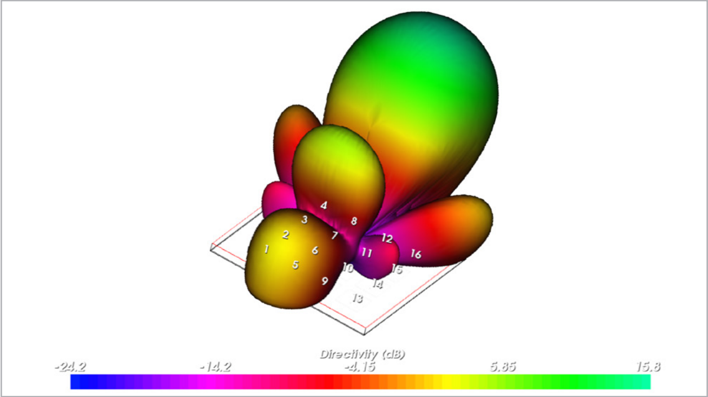

AWR AXIEM
三维平面电磁分析软件
AWR® AXIEM® 是 Cadence AWR Design Environment® 平台内的三维平面电磁 (EM) 分析软件，其快速求解器技术可轻松实现无源结构、传输线、大型平面天线和贴片阵列的设计。无论是对PCB、模块、低温共烧陶瓷 (LTCC)、微波单片集成电路 (MMIC)、RFIC 还是天线上的无源组件进行特征分析和优化，AWR AXIEM 软件均可提供一次设计成功所需的准确度、性能和速度。
AWR 软件平台
快速、准确的自适应混合网格技术支持厚金属平面结构和过孔，自动将结构分解为三角形和矩形单元，在任何的频段均可得到最准确和稳健的宽带结果。AXIEM 与电路和系统设计无缝集成，支持直接对无源组件和互连结构等平面结构进行电磁协同仿真。专有的 AWR 统一数据模型支持电磁提取和设计验证，将结果直接整合入电路和/或系统仿真中，无需执行明确的布局定义、电磁仿真设置步骤或数据导入。多功能、种类广泛的源/端口（包括经过自动校准的内部端口和去嵌入选项）可提供更大的灵活性，同时保持基于嵌入式电路的集总元件和有源器件（如晶体管）的结构精度。

产品优势
设计流程
支持从企业级布局工具（如 Cadence、Mentor Graphics、Zuken等）导入数据库，并支持诸多设计自动化功能，例如将端口自动添加到电磁子电路中，以便大大简化整个设计过程中电磁仿真的使用。
无源建模
使用矩量法 (MoM) 技术和先进的网格划分功能，在单层和多层电路上对传输线和任意结构进行三维平面电磁仿真，进而精确计算 S、Y 和 Z 参数以及多层 RFIC、MMIC、PCB、混合电路和多芯片模块 (MCM) 的电流密度。
优化和良率
对无源组件和复杂互连结构进行准确的设计诊断，例如良率分析和优化，捕获电路拓扑的真实耦合和寄生效应，这些电路拓扑通过基于规则的形状修改器/特征清除功能进行参数化和/或定义。
可视化
直接在经过分析的结构上将电流和电场强度用颜色标注，以深入了解组件行为以及潜在的设计失效原因。

仿真技术
网格划分
AWR AXIEM 软件经过专门优化，可使用先进的混合网格划分技术将结构自动分解为三角形和矩形单元，从而最大程度地提高准确性并降低未知风险。这种启发法扩展了工具的功能范围，使之远远超越传统的同类网格类型。
矩量法
该软件采用了一种独特专有技术，与快速的多极方法相似，但也适用于全波分析。因此，与大多数现有的矩量法 (MoM) 产品所使用的 N3 相比，AWR AXIEM 求解算法对 N*log(N) 中的阶次进行了缩放。
天线分析
该软件可以执行平面天线和平面阵列的分析和后处理。快速的N*Log(N) 求解器技术可解决以前无法进行整体仿真的大型复杂阵列。新的峰值天线测量功能支持性能指标，如总辐射功率或辐射模式“切口”上特定极化方向的功率，该功率是扫频的函数或其他用户定义的扫频参数。
功能
亮点
► 布局/绘图编辑器 – 二维和三维视图
► 专有矩量法 (MoM) 技术
► 混合网格划分技术 – 自动进行自适应网格划分（混合矩形/三角形网格）
► 多个源和激励
► 可视化和结果后处理
► 参数研究 – 优化、调谐和良率分析
► HPC – 多核配置和异步仿真
应用和技术
片上系统
AWR AXIEM 软件可以轻松分析片上无源结构、传输线、互连结构、过孔和 MMIC 封装。为厚金属提供支持时，需要创建挤压平面几何形状的三维网格，同时准确计算所有表面上的所有 x、y 和z 定向电流，这是 III-V 和硅 MMIC/RFIC 设计的先决条件，此类设计依赖于电路/电磁协同仿真，以实现嵌入式寄生参数提取和设计验证。借助分层电磁/电路协同仿真，设计人员可以进行原位电磁分析，在下线前捕获并纠正有害的寄生耦合和谐振。

封装与电路板
AWR AXIEM 软件中基于布局的 PCB 设计流程支持对整个射频信号路径进行精确仿真。电路/系统和电磁协同仿真可对表面贴装元件、互连传输线以及嵌入式和分布式无源元件进行完整的PCB 分析以及电磁验证，确保一次设计成功率。通过 PCB 导入向导将 PCB 布局工具（例如 Cadence Allegro® 技术）中的IPC-2581（Gerber 或 ODB++）文件导入 AWR 软件，即可实现电磁验证。借助强大的编辑功能，可以进行快速、准确和高效的电磁分析。

天线
现如今，5G 和 IoT 智能设备的射频设计人员需要使用专业的仿真和优化技术来开发具有高增益、单频带或多频带以及宽带频率范围的小型嵌入式天线。AWR AXIEM 软件可助力工程师设计、优化和集成天线/阵列，同时提供强大的电磁技术来模拟天线指标参数，例如增益、回波损耗、辐射效率和电流，并实现二维/三维远场天线方向图的可视化。
